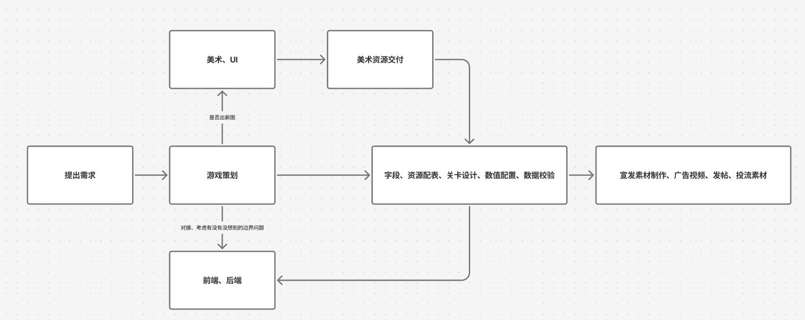

02 / WORKFLOW
工作流程
确认目标
与负责人确认功能目的、用户行为、奖励和上线范围。
拆分需求
梳理规则、界面状态、异常情况、关卡和美术UI资源。
配置设计
准备配置表，与前端确认新增字段、枚举和默认值。
前后端对接
由程序确认哪些内容写死、哪些走配置，再按结果修改表结构。
资源与关卡
同步美术资源到Unity；若功能涉及关卡，完成设计并写入配置。
联调测试
验证功能流程、奖励发放、配置读取、异常状态与界面反馈。
上线复查
同步后台与本地表数据，上线后再次测试并维护Bug记录。
WORK CASE / PRODUCTION FLOW
从负责人提出需求开始，完成规则确认、资源拆分、配置与字段对接，配合前后端联调、功能测试、Bug跟进和上线后复查。

02 / WORKFLOW
与负责人确认功能目的、用户行为、奖励和上线范围。
梳理规则、界面状态、异常情况、关卡和美术UI资源。
准备配置表，与前端确认新增字段、枚举和默认值。
由程序确认哪些内容写死、哪些走配置，再按结果修改表结构。
同步美术资源到Unity；若功能涉及关卡，完成设计并写入配置。
验证功能流程、奖励发放、配置读取、异常状态与界面反馈。
同步后台与本地表数据，上线后再次测试并维护Bug记录。
03 / MY HANDOFFS
把方向整理成清晰的玩法规则、奖励方案和需要决策的问题。
列出新增界面、状态、图标、尺寸和命名要求，如有需求找参考案例绘制原型图，并检查资源是否齐全。
确认功能状态、字段、枚举、需要走配置表的内容。
根据前后端确认结果调整表，并维护本地配置与后台数据一致。
按正常流程、边界条件和异常状态测试，维护bug表及时记录问题，协调版本发布。